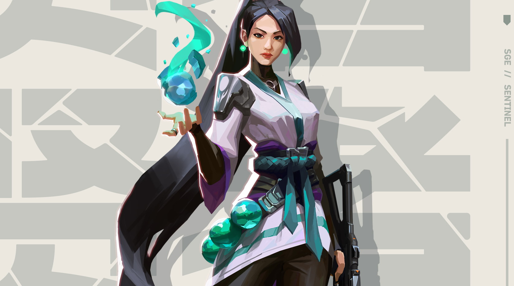
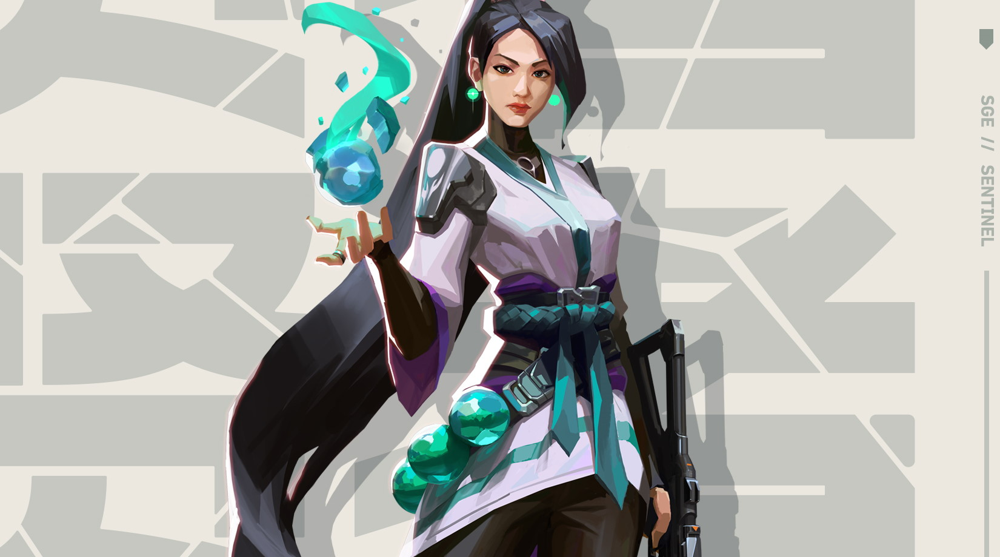

Об агентах в общем
VALORANT отличается от CS:GO, R6 и многих других многопользовательских шутеров тем, что в нем
присутствует необходимость выбирать агентов( персонажей с особыми способностями). Играя в
VALORANT, мы открываем контракты и получаем агентов, но у новичков могут возникнуть трудности с
повторным открытием другого персонажа, если их первый выбор им не подошел.
Агенты делятся на четыре роли:
1)Дуэлянты - от них зависит успех первой перестрелки в раунде, на таких персонажах необходимо
проявлять агрессию и показывать результативность на табло. Навыки таких агентов чаще всего
рассчитаны лишь на упрощение процесса убийства противников.
2) Зачинщики - отрезают опасные углы, ниши и части карты, которые тяжело проверить при заходе на
точку. Помогают отвоевывать территорию, находятся практически на острие атаки вслед за
дуэлянтами. Их навыки важны для команды, но и стрельба на таком агенте тоже влияет роль, ведь
порой надо выйти первым, если дуэлянт замешкался
3) Специалисты - воздвигают дымовые завесы, преграды из яда и огня, способны отрезать помощь
силам противника и упростить выход на точки. Правильное тактическое решение от специалиста в
большинстве ситуаций может выиграть раунд
4) Стражи - отрезают фланги, зачищают тыл, всячески помогают команде своими способностями
больше, чем стрельбой. Им нежелательно умирать первыми, выходить на точку впереди команды и
играть в одиночку, в них больше всего нуждается игровой состав и без них игра становится очень
проблематичной.
 
